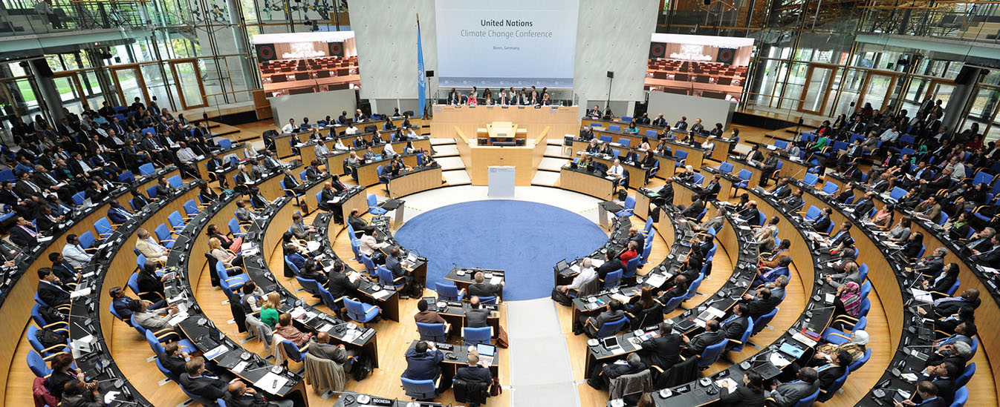

Trafficking > What is Human Trafficking? > Emytology and Definition
International Conventions on White Slave Trade
- The 1899 Congress and the 1902 Conference
The 1899 International Congress on White Slave Trade
In 1899 the first International Congress on the White Slave Trade (1899 Congress) was held in London as an international attempt to curb the moral panic regarding children pornography and prostitution. At the 1899 Congress a non-binding draft of propositions were compiled, which laid the foundation for an international agreement, providing an instrument to combat white slave trade. The first proposition was defined as follows:
"To punish, and as far as possible by penalties of equal degree, the procuring of women and girls by violence, fraud, abuse of authority, or any other method of constraint, to give themselves to debauchery, or to continue in it; […]" (Allain, 2017).
While appearing relatively similar to the English CLAA 1885 definition of traffic, the 1899 Congress definition contained a significant modification. Oppose to the CLAA 1885, the trafficking offence in the 1899 Congress consisted of three parts: act, mean and purpose. The act meaning "the procuring of women", the mean meaning "violence, fraud, abuse of authority, or any other method of constraint", and the purpose meaning "to give themselves to debauchery" (prostitution).
Amending the mean constituent illustrates a shift in the notion of "willingness" and "innocence" in terms of defining when a woman or a girl is a victim as oppose to being responsible for her own procurement cf. the CLAA 1885. Another change was the absence of age limit and the explicit mentioning of "common prostitute". All women, regardless of whether they were prostitutes or not, would be defined as trafficking victims which was contrary to CLAA 1885, that only aimed to protect non-prostitutes under the age of 21 or, as an exception, all women who had been procured by means of drugs.
"In the Grip of a White Slave Trader" by the National Vigilance Association, 1911

The 1902 Conference International Conference on the White Slave Traffic:
Three years later this non-binding resolution was the basis of deliberation at the 1902 International Conference on the White Slave Traffic. It took place in Paris and had the primary objective of producing a draft convention which would be implemented and enforced in each of the attending States. The following definition of white slave trade was proposed:
"Severely punished will be any person who, to satisfy the passions of another, shall have procured, enticed or led astray, even with her consent, an underage girl, with immoral intent."
"Equally will be punished any person who by violence, threats, abuse of authority, compulsion or fraud will have procured, enticed, or led astray a woman or a girl over age, with immoral intent" (Allain, 2017).
Compared with the 1899 Conference, the definition suggested in 1902 explicitly divided women and girls into an underage (1) and an over age (2) category. Underage women and girls were defined as victims of slave traffic even if they hadn't been exposed to violence, threats etc. On the other hand, such measures had to be applied in order for over age women or girls to be considered as slave traffic victims. A further elaboration on the definition of what constitute the offence of white slave traffic was afforded on the basis of the 1899 definition:
"to procure is to is to invite or lead the woman or girl to become a prostitute; to entice is to take her away with or persuade her to follow; to lead astray is to remove her illegally from her surroundings. […] The offence is characterized by its continuity; the successive steps which it may entail take place either within the frontiers of one country alone or in several countries. There is no unity of place. This criminal traffic is international: the human body is traded in and treated as merchandize; the traffickers in it have their agencies, their depots, their correspondents, their export offices, and even their code" (Allain, 2017).
"The White Slaves of London" by W.N. Willis 1860-1922
"Severely punished will be any person who, to satisfy the passions of another, shall have procured, enticed or led astray, even with her consent, an underage girl, with immoral intent."
"Equally will be punished any person who by violence, threats, abuse of authority, compulsion or fraud will have procured, enticed, or led astray a woman or a girl over age, with immoral intent" (Allain, 2017).
There are several interesting aspects embodied in this specification. First, the offence (red. trafficking) was describe as a process with multiple steps which I previously have referred to as act, mean and purpose. Secondly, that white slave traffic not necessarily had to involve the crossing of national borders and jurisdictions but could take place in one country alone. And finally, that the human body was treated like a commodity on level with any other commercial product in international trade along with its associated supply chain.
The seemingly obvious link between "white slave traffic" and "black slave traffic" was never a serious subject of discussion at the 1902 Conference but it was broach by the Dutch delegate Mr. Macaré who mentioned a provision of Dutch law relating to the "black slave trade" (traite des noirs) "which seemed to us offered a formula which we are looking for to suppress the white slave traffic’ (traite des blanches)" (Allain, 2017).
Whether the reason for the lack of discussion was due to a clear political strategy serving a political "women rights" or "immigration" agenda, path-dependency or something else, the decision (or non-decision) to do so, produced a legal human traffic-framework that was extremely women oriented and outwardly racial exclusive. The former has left its clear mark on the human trafficking definition in a modern-day context as will be discussed later (see more).